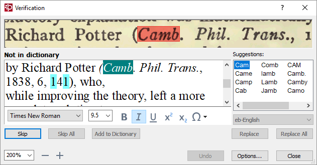
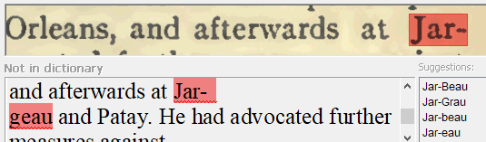

Use AFR's built-in program to verify recognition accuracy on each page.
Verifying a page asks you to check the accuracy of all "low-confidence" characters
and words that are not in the dictionary. It is helpful for correcting small
details, like a comma that should be a period. It will not catch all errors;
sometimes the OCR engine is confident in wrong results. After completing the
verification process, visually scan the page looking for obvious errors.
Click the Verify icon. .
The Verification window opens.
Figure 1: Verification window.

Compare the highlighted word in the lower window to the source text in the top
window. To verify a highlighted word, click Skip. The
dialogue moves to the next questionable letter or word.
Correct errors in the lower window. The Skip button
changes to Confirm, and you click it to accept the change
and move to the next letter or word.
The Suggestions window contains possible corrections. Use
the Replace button to automatically correct the
error.
The drop-down menu below the Suggestions window indicates
the dictionary ABBYY FineReader is using. If you are getting a lot of
spelling questions, the program may be assigning the wrong language to the text.
This usually requires a change to the user
file to correct. Alert your supervisor to the problem
immediately.
The following guidelines can help in addressing common situations when verifying text. Further
information is contained in Editorial standards.
Old-fashioned spellings in words should be preserved and can be included in the
dictionary with the Add to Dictionary button.
Any remaining hard hyphens, as in the example, should be removed. Soft, or
"optional," hyphens are indicated with " ¬ " and can be safely ignored.

Common fractions can be found on the symbol chart, in the Latin-1 Supplement
and the Number Forms subsections (see Unicode Characters). Create a reasonable
substitute for other fractions by using a combination of superscript numerals
for the nominator, a slash, and subscript numerals for the denominator.